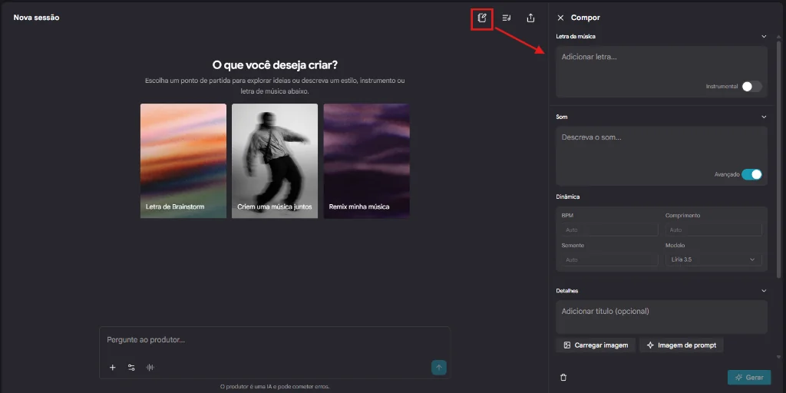
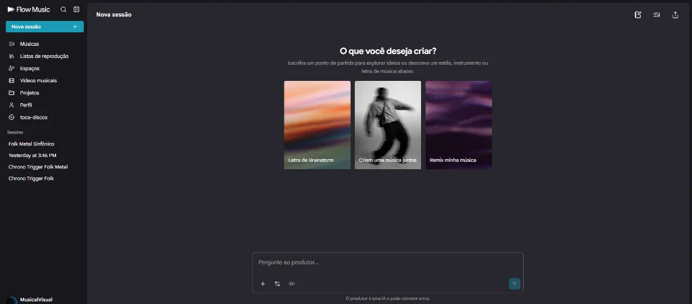
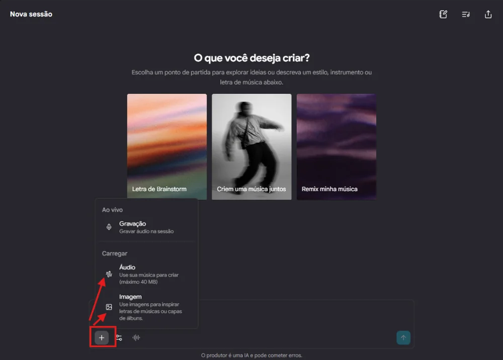

Como Criar Música com Inteligência Artificial: O Guia Definitivo de Engenharia de Prompt para Áudio (Lyria 3.5 e Flow Music)
Modelos de geração de áudio por inteligência artificial — como Google Lyria 3.5, Suno (v3/v4) e Udio — não interpretam texto da mesma forma que os seres humanos. Em vez de lerem palavras buscando apenas significado gramatical ou semântica literária, esses sistemas utilizam redes neurais profundas treinadas para associar tokens textuais a padrões acústicos espectrais em um espaço latente multidimensional.
Quando estruturamos um prompt com parâmetros formais, tags de controle e métrica silábica bem definida, não estamos simplesmente "pedindo uma canção": estamos elaborando uma verdadeira partitura semântica. Essa partitura dita à IA a alocação precisa de camadas sonoras, a dinâmica rítmica, a curva de intensidade dramática e as transições harmônicas.
Neste guia completo, você vai entender a arquitetura de um prompt musical de alta performance, o papel crítico das metatags entre colchetes [ ], os modos operacionais de plataformas como o Flow Music e acompanhar um estudo de caso prático completo: a criação de uma faixa épica inspirada em Geralt de Rívia (The Witcher).
💡 TL;DR / Resumo Rápido:
- Redes de Áudio Não São Chatbots: Modelos de áudio traduzem descritores textuais em espectrogramas e dinâmicas de onda. A precisão dos termos acústicos define o timbre final.
- Colchetes
[ ]São Metatags: Tudo o que estiver entre colchetes não deve ser cantado pela voz principal; serve para comandar o arranjo, instrumentos, foley e estilo vocal.- Inglês no Sound Prompt: O vocabulário de instrumentos e subgêneros deve ser em inglês (bardcore, hurdy-gurdy, tight acoustic room) para máxima aderência ao dataset de treino.
- Modos de Criação: Escolha entre Prompt Direto (ideal para rascunhos rápidos), Modo Compositor (controle cirúrgico de letra e som), Image-to-Audio (inspiração visual multimodal) e Audio-to-Audio (continuação e remix com base real).
🛠️ A Anatomia de um Prompt Musical Profissional
Para obter resultados consistentes e evitar que a IA "invente" melodias genéricas ou atropele versos, a estrutura do seu input deve seguir uma divisão em três camadas complementares:
┌─────────────────────────────────────────────────────────────┐
│ ANATOMIA DO PROMPT DE ÁUDIO IA │
├─────────────────────────────────────────────────────────────┤
│ 1. Parâmetros Globais / Sound Prompt │
│ -> Define o "palco", acústica, timbres e velocidade (BPM)│
│ │
│ 2. Tags Estruturais entre Colchetes [ ] │
│ -> Define o "esqueleto" formal e a dinâmica temporal │
│ │
│ 3. Letra (Lyrics) & Métrica Silábica │
│ -> Alinha ritmo, cadência, dicção e intenção emotiva │
└─────────────────────────────────────────────────────────────┘
Essa separação garante que o modelo entenda com clareza o que é contexto sonoro de fundo, o que é comando de transição e o que é conteúdo lírico cantado.
🎛️ Para que Servem os Colchetes [ ]?
Os colchetes funcionam como metatags de controle estrutural e sonoplastia. Eles ensinam à IA que aquele fragmento de texto não faz parte da letra a ser cantada pelo vocalista, mas representa uma diretriz de produção musical.

Podemos agrupar essas instruções em quatro categorias fundamentais:
1. Tags de Seção (Estrutura da Forma Musical)
Organizam as partes tradicionais da composição ocidental:
[Intro]: Constrói a atmosfera inicial antes da entrada da voz.[Verse]: Verso com instrumentação contida, focado na narrativa.[Pre-Chorus]: Elevação de tensão dinâmica preparando o ouvinte.[Chorus]: Refrão explosivo, com maior densidade de instrumentos e apoio de coro.[Instrumental Break]ou[Solo]: Trecho sem vocais, reservado para virtuosismo instrumental.[Bridge]: Ponte temática com variação de tom, andamento ou dinâmica emocional.[Outro]: Conclusão que dissipa as camadas sonoras até o silêncio.
2. Tags de Instrumentação e Ação
Instruem intervenções específicas de instrumentos sem necessidade de voz cantada:
[Acoustic lute picking][Galloping double bass drum][Virtuosic fiddle solo][Heavy distorted bass drop]
3. Tags de Ambiência e Foley (SFX Cinematográficos)
Inserem camadas sonoras do ambiente, conferindo textura viva e imersiva à gravação:
[Campfire crackling](estalido de fogueira)[Tavern crowd murmur](murmúrio de pessoas em taberna)[Heavy sword draw sound effect](som metálico de espada desembainhada)[Thunderclap and pouring rain](trovão e chuva torrencial)
4. Tags de Modulação Vocal
Definem o timbre, estilo de emissão e posicionamento da voz em cada trecho da faixa:
[Minstrel baritone](vocal de menestrel em tom barítono)[Whispered voice](voz sussurrada, intimista)[Raspy roar](emissão rouca e agressiva)[Massive choral chant](cântico em uníssono de coro massivo)
🧩 O Passo a Passo de Cada Etapa do Prompt
Etapa 1: Parâmetros Técnicos (Sound Prompt)
No campo de estilo e instrumentação, a precisão terminológica faz toda a diferença:
- Title (Título): Ajuda o classificador interno do modelo a contextualizar o universo semântico da obra.
- Sound (Prompt de Estilo em Inglês): Motores generativos possuem conjuntos de treinamento predominantemente catalogados em inglês. Termos técnicos canônicos garantem fidelidade sonora:
- Subgêneros específicos:
dark slavic folk,medieval bardcore,symphonic metal. - Instrumentos acústicos raros:
hurdy-gurdy,bouzouki,bodhrán,nyckelharpa,davul. - Acústica de gravação:
cathedral reverb,tight room acoustic,dry punchy drums.
- Subgêneros específicos:
- BPM (Batidas Por Minuto): Regula o metrônomo do sequenciador interno. Impede que trilhas épicas fiquem arrastadas ou que baladas melancólicas virem um pop acelerado e ininteligível.
- Length (Duração Estimada): Baliza o espaçamento temporal entre as estrofes para que a rede neural não comprima ou estique versos de forma artificial.
Etapa 2: A Construção da Letra (Lyrics)
Uma letra para IA musical exige disciplina métrica. Modelos neurais sofrem quando encontram estrofes com número caótico de sílabas poéticas:
- Métrica Regular (AABB / ABAB): Estrofes com número equilibrado de sílabas mantêm o fraseado rítmico fluído.
- Rimas Fortes: Acentuações rimadas ajudam a rede neural a prever a terminação das frases musicais e a cadência melódica.
- Transições Claras: O uso de
[Pre-Chorus]sinaliza aceleração do fraseado, enquanto o[Chorus]pede frases concisas e memoráveis (hooks).
🐺 Exemplo Prático: Geralt de Rívia (The Witcher)
Para demonstrar como todas essas peças se conectam na prática, desenvolvemos uma produção temática no estilo Dark Slavic Folk / Bardcore utilizando o motor Google Lyria 3.5.
1. 🎛️ Parâmetros Técnicos (Lyria 3.5)
| Parâmetro | Configuração Recomendada |
|---|---|
| Title | O Lobo Branco de Rívia |
| Model | Google Lyria 3.5 |
| Sound Prompt | Dark slavic folk, medieval bardcore, driving hurdy-gurdy, aggressive acoustic guitar strumming, wild wooden flute, rustic tavern violin, deep marching davul drum beat, storytelling baritone minstrel vocal, raspy emotional delivery, rowdy tavern choir chants. |
| BPM | 116 |
| Length | 03:10 |
2. 📜 Letra Completa Estruturada (Lyrics com Metatags)
Abaixo está o texto exato pronto para ser colado no editor de letras do seu gerador musical:
[Intro]
[Acoustic lute arpeggio, tavern crackling fireplace, coins clinking on oak wood, distant horse whinny]
[Verse 1]
Olhos dourados cortando a cerração
Duas lâminas frias presas ao gibão
Uma forjada em aço pra homem e traidor
Outra banhada em prata contra fera e pavor
Passos pesados no barro de Velen
Onde a miséria não poupa ninguém!
[Pre-Chorus]
[Tense rhythmic davul drum builds up, sharp hurdy-gurdy drone, rising tavern murmur]
Sussurram na estepe: "Lobo voraz!"
Paga em moedas o mal que desfaz
O elixir queima no peito sem freio
As veias escurecem sem dor nem receio!
[Chorus]
[Full tavern folk explosion, driving acoustic beat, energetic wooden flute, crowd joining in]
Jogue o trocado na mão do bruxo!
Matar aberrações não é vida de luxo!
Monstros na terra, humanos no vício:
Geralt caminha no precipício!
[Verse 2]
[Tempo remains steady, melancholic rustic violin, muted acoustic chords]
Na escuridão da velha mansão
A Striga rasteja com ódio e rancor
Ele não busca sangue ou vingança
Mas quebrar o feitiço e a herança da dor
Espera a aurora deitado na cova
Até que o galo a vida renove!
[Instrumental Break]
[Furious slavic violin solo trade-off with racing hurdy-gurdy, stomping boots on wooden floor, sword clashing effect]
[Bridge]
[Sudden drop in dynamics, slow acoustic lute strumming, solemn, raspy low voice]
O mal maior ou o mal menor...
Entre duas sombras, o dilema é pior.
Se o mundo o julga sem nada saber,
A lâmina dele apenas faz valer!
[Chorus]
[Full arrangement blast, soaring flute melodies, loud drunken tavern choir]
Jogue o trocado na mão do bruxo!
Matar aberrações não é vida de luxo!
Monstros na terra, humanos no vício:
Geralt caminha no precipício!
[Outro]
[Fading acoustic guitar, crackling fireplace embers, lone whistle melody, heavy wooden door latch click]
Um copo de hidromel no balcão esquecido...
E o Lobo parte na noite sem ruído.
[Silver sword sheathing sound, horse trotting away]
🎧 Modos de Criação no Flow Music
Plataformas modernas de inteligência artificial musical disponibilizam interfaces versáteis para atender desde quem quer apenas uma ideia rápida até produtores que exigem controle absoluto sobre cada compasso.

Abaixo, detalhamos como cada modalidade opera sob o capô:
1. Prompt Direto (Text-to-Song / Modo Rápido)
- Como funciona: Você insere uma descrição livre na caixa de diálogo principal (por exemplo: "Uma música épica folk sobre Geralt de Rívia enfrentando monstros numa taberna com flautas e violinos").
- Comportamento da IA: O motor gera de forma autônoma a letra em versos, a linha melódica vocal e os arranjos de apoio em uma só etapa.
- Quando usar: Ideal para brainstorming, descoberta de timbres e prototipação de melodias em poucos segundos.
2. Modo Compositor (Custom / Advanced Mode)
- Como funciona: Desacopla o campo de descrição sonora (Sound Description / Style) da janela de texto lírico (Lyrics).
- Comportamento da IA: É a modalidade onde a engenharia de prompt brilha. Permite colar a letra meticulosamente formatada com tags
[Verse],[Chorus],[Solo]e definir BPM, modelo (como o Lyria 3.5) e sementes de aleatoriedade (seeds). - Quando usar: Essencial para faixas autorais completas, canções narrativas e trilhas de jogos com coerência temática.
3. Música a partir de Imagem (Image-to-Audio / Visual Prompting)
- Como funciona: Você faz o upload de uma arte conceitual ou foto de cena.
- Comportamento da IA: Módulos de visão computacional multimodal extraem paleta de cores, contraste, atmosfera, iluminação e emoção da imagem, convertendo esses elementos visuais em tags sonoras correspondentes (ex: dark, stormy, epic fantasy, cold strings, menacing brass).
- Quando usar: Perfeito para designers de jogos, ilustradores e cineastas que desejam uma trilha sonora que reflita com fidelidade a identidade visual de seus mundos.

4. Música a partir de Áudio Enviado (Audio-to-Audio / Extend / Inpainting)
- Upload de Referência: Permite enviar uma gravação real (uma linha cantada no celular, um dedilhado no violão ou uma progressão MIDI renderizada). A IA analisa a escala tonal, harmonia e andamento, produzindo uma orquestração profissional por cima da base.
- Extend / Continue from: Se a sua música atingiu o limite de geração por bloco (por exemplo, 2 ou 3 minutos), basta selecionar o segundo exato onde a faixa terminou, inserir o bloco subsequente (
[Bridge]e[Outro]) e o sistema gera uma transição harmônica ininterrupta respeitando o timbre e tom originais.
🛡️ Checklist Anti-Alucinação para Prompts Musicais
Para garantir que suas produções mantenham padrão profissional, adote estas regras de ouro:
- Nunca misture letra cantada dentro de
[ ]: Mantenha os colchetes estritamente reservados para sonoplastia, nomes de seção e instruções instrumentais. - Evite descrições sonoras em português: Palavras como "violino da roça" ou "sanfona medieval" frequentemente geram instrumentos errados. Prefira
rustic tavern violinedriving hurdy-gurdy. - Respeite o fôlego vocal: Não escreva estrofes com 18 sílabas seguidas sem pausas ou vírgulas. A voz sintética precisa de pausas rítmicas para soar natural e convincente.
- Isole os solos: Ao solicitar um
[Virtuosic violin solo], garanta que não haja frases de letra na mesma linha, assegurando espaço para a IA exibir todo o virtuosismo do arranjo.
Experimente aplicar essa estrutura em suas próximas criações sonoras e veja como a previsibilidade e a qualidade dos seus arranjos darão um salto de nível!